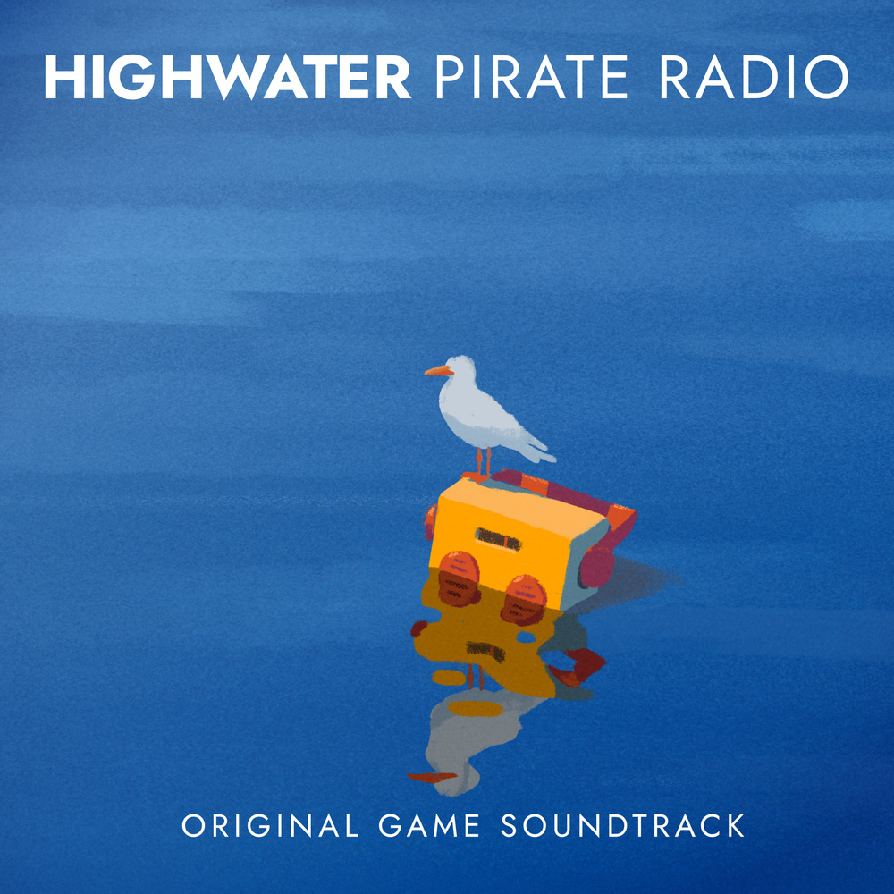

Coming to PC and consoles very soon alongside the original soundtrack Highwater Pirate Radio,
a prequel to Radio Nostalgia from Mars,
the radio show in Golf Club: Nostalgia and The Cub.
The game is available on Netflix mobile (App Store and Google Play),
on PC and consoles.
In a week elites are about to evacuate to Mars.
A group of ragtag friends from Hightower,
which was mockingly renamed Highwater amid a devastating flood,
will attempt to board the Mars-bound “Hope mission” rocket.
Nikos & Co. go on a story-driven journey with boat driving, exploration,
and turn-based combat, while listening to the music and
stories of the Highwater Pirate Radio.
The soundtrack Highwater Pirate Radio is available on all music platforms:
Water, water, everywhere,
Nor any drop to drink.
— Samuel Taylor Coleridge
Spurn possessions and keep
alive living beings! Make all
living beings go up into the
boat.
— Epic of Gilgamesh